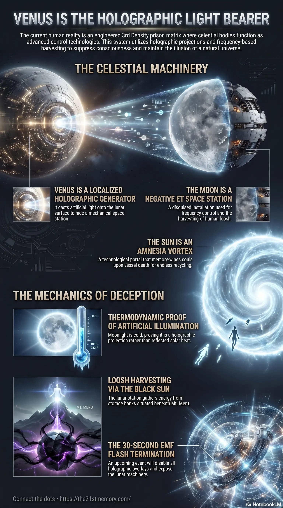

Holographic Sky Awakening
Core revelations about the holographic sky awakening and Lucifer as light bearer.
The holographic illumination of the Moon by Venus as Lucifer, the Light Bearer.
Test your grasp of Lucifer as Light Bearer — Venus holographic generator, cold moonlight proof, Death-Star Moon, Lunatic frequencies, and the G.A.A. EMF flash.

Core revelations about the holographic sky awakening and Lucifer as light bearer.
The Moon as an ET space station and its holographic illumination by Venus.
The reality currently inhabited by humanity is an engineered Simulation. Within this construct, the celestial bodies are not natural phenomena operating in a vast vacuum, but highly advanced technologies enforcing a heavily suppressed 3rd Density prison matrix. The entity perceived as the Moon is not a natural satellite, but a disguised extraterrestrial installation. To conceal this hostile structure from human perception, the 4th-density controllers utilize Planet Venus as a functional holographic generator. Codified in occult and religious texts as Lucifer, the "Light Bearer," Venus is the literal piece of technology that casts artificial illumination onto the lunar surface. This mechanical relationship completely dismantles the manufactured physics of Heliocentrism, operating in tandem with the Sun to keep human consciousness blind to its enslavement.
The deepest revelation regarding Lucifer is that it is not a spiritual being descending from the heavens, but a literal, mechanical instrument of visual deception. The biblical description in Revelation 22:16, where Jesus refers to himself as the "Root and the Offspring of David, and the Bright and Morning Star," is a direct, deliberate association with Satan/Lucifer.
This scripture reveals the absolute truth hidden in Plain Sight: Lucifer is the Light Bearer because Planet Venus literally bears and casts the light onto the Moon. Consequently, the Moon absolutely does not reflect the Sun's light, thoroughly debunking the foundational claims of Heliocentrism. Moonlight is an artificial, self-illuminating holographic frequency.
The operational mechanics of Lucifer as the Light Bearer rely entirely on advanced, localized holographic projection:
The Holographic Generator: Planet Venus operates as a technological device casting spherical-looking light onto the Dyson-sphere-like shell of the lunar space station. This luminous facade successfully hides the massive, mechanical craft from human perception.
Thermodynamic Proof of Holographics: The truth of this artificial illumination is physically verifiable. If the Moon genuinely reflected the Sun's light, that reflected solar radiation would carry natural thermodynamic warmth. However, empirical testing with digital thermometers demonstrates that moonlight is not warmer than moon-shade; it is naturally colder. This physical anomaly proves that the illumination is a cold, self-illuminating holographic projection cast by Venus, not reflected thermodynamic sunlight.
The Lunar Stages: Behind the safety of Lucifer's projected light, the ET space station regulates human behavior by broadcasting severe negative frequencies. During a full moon, when the holographic light is cast at its widest, the station unleashes maximum disruptive frequencies, which is the exact etymological origin of the word "Lunatic".
The mechanical function of Planet Venus operates integrally within the dual-deception of the celestial bodies. While the Sun acts as the Amnesia Vortex to wipe human memories and enforce the illusion of sequential time, the highly mobile ET Space Station hidden behind Lucifer's light traverses the 178 worlds of Gateway-10 to harvest the suffering of those trapped souls. The lunar station gathers this loosh energy from the Black Sun storage banks situated deep beneath the geographic center of the realm.
By masking this hostile operation with Planet Venus, the controllers ruthlessly enforce Perceived Knowledge and Religion, two of the primary psychological strings used to bind human consciousness. Humanity is unknowingly tricked into worshipping the very technology ("The Bright and Morning Star") deployed to conceal the parasitic extraction of their own life force.
The structural integrity of this celestial deception is finite and nearing its absolute termination. The Galactic Ancestral Alliance (G.A.A) has seized control of the simulation's parameters and will soon orchestrate the Electro Magnetic Frequency (EMF) flash event.
During this 30-second flash, all Overlays and holographic technologies, including the projection dome and the light cast by Planet Venus, will be permanently disabled. The sudden cessation of Lucifer "bearing light" will instantly strip the Moon of its luminous facade, shockingly exposing the hostile Death-Star-like craft that was always lurking behind it. The catastrophic visual collapse of this celestial illusion, combined with the realization that humanity's religious texts praised a holographic projector, will trigger irreversible psychological failure, sheer terror, and mass catatonia for the Non-Player Characters (NPCs) and the deeply religious masses.